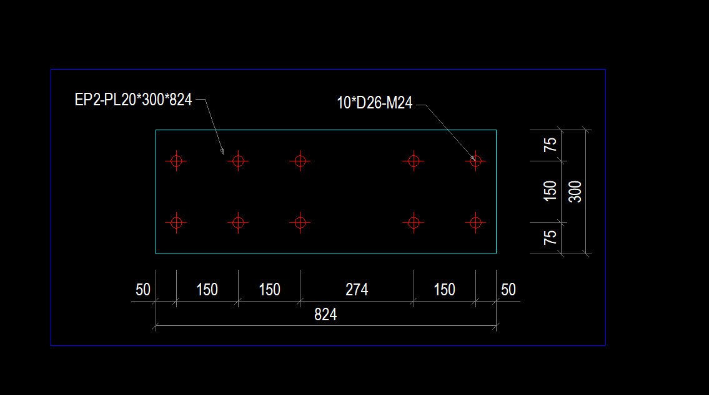
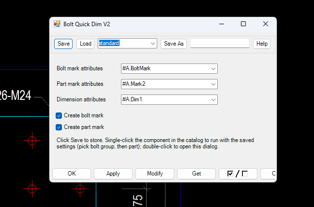

iVidLab Bolt Quick Dim V2 — Bấm một lần, bản vẽ có đủ kích thước và số hiệu bu-lông
Chọn một nhóm bu-lông và một cấu kiện: kích thước và số hiệu được vẽ xếp gọn ngoài cấu kiện. Thiết lập của bạn được nhớ, lần sau chạy luôn.
Tóm tắt nhanh
- Bấm một lần là chạy: chọn nhóm bu-lông, chọn cấu kiện, xong.
- Nhớ thiết lập: chọn kiểu một lần, bấm Save, lần sau chạy theo đó.
- Kích thước xếp gọn ngoài cấu kiện, không đè lên nhau.
- Kết quả là đối tượng bản vẽ bình thường, sửa hoặc xoá như thường.

1. Cách dùng
- Mở bản vẽ cần ghi kích thước trong Tekla.
- Bấm Bolt Quick Dim V2 trong nhóm iViDLab của bảng Applications & components.
- Chọn một nhóm bu-lông, rồi chọn một cấu kiện (dầm hoặc bản mã).
Muốn đổi thiết lập thì nháy đúp vào component để mở hộp thoại.
2. Làm được gì
| Tính năng | Mô tả |
|---|---|
| Bấm một lần là chạy | Chọn nhóm bu-lông và cấu kiện là xong, không phải mở hộp thoại mỗi lần |
| Nhớ thiết lập | Chọn kiểu số hiệu và kiểu kích thước một lần, bấm Save; lần sau chạy theo đó |
| Chọn từ bộ chuẩn công ty | Ba ô chọn lấy trực tiếp danh sách kiểu trình bày có sẵn trong Tekla, không bị ép một kiểu cố định |
| Bật hoặc tắt số hiệu | Hai ô tích: có hoặc không đánh số hiệu bu-lông, có hoặc không đánh số hiệu cấu kiện |
| Kích thước xếp gọn | Kích thước chi tiết nằm sát cấu kiện, kích thước tổng thể ngoài cùng; ngang phía dưới, dọc bên phải |
| Dầm lẫn bản mã | Tự nhận loại cấu kiện và chọn cách đo phù hợp |
| Sửa được như thường | Kích thước và số hiệu là đối tượng độc lập: sửa, xoá, di chuyển tuỳ ý |

3. Vì sao đáng dùng
- Gộp ghi kích thước và đánh số hiệu thành một lần bấm.
- Thiết lập một lần, dùng mãi: không phải chọn lại kiểu ở mỗi bản vẽ.
- Vẫn theo kiểu trình bày riêng của từng công ty và dự án.
4. Cài đặt
- Ở mục Tải về bên dưới, chọn phiên bản Tekla đang dùng để tải gói
.tsep(từ Tekla 2016 trở lên). - Nhấp đúp file
.tsep, tick phiên bản Tekla rồi bấm Import. Gói được cài khi Tekla khởi động lần tiếp theo. - Đã cài bản Bolt Quick Dim cũ (macro)? Cài đè gói mới là được.
iVidLab Bolt Quick Dim V2 — One click, and the drawing gets its bolt dimensions and marks
Pick a bolt group and a part: the dimensions and marks are laid out tidily outside the part. Your settings are remembered, so next time it just runs.
At a glance
- One click to run: pick the bolt group, pick the part, done.
- Remembers your settings: choose the styles once, click Save, and it runs that way next time.
- Tidy dimensions outside the part, with nothing overlapping.
- The result is ordinary drawing objects, editable and deletable as usual.
1. How to use it
- Open the drawing you want to dimension in Tekla.
- Click Bolt Quick Dim V2 in the iViDLab group of the Applications & components panel.
- Pick a bolt group, then pick a part (beam or plate).
To change the settings, double-click the component to open the dialog.
2. What it does
| Feature | Description |
|---|---|
| One click to run | Pick the bolt group and the part and you are done, with no dialog each time |
| Remembers your settings | Choose the mark and dimension styles once and click Save; it runs that way next time |
| Pick from company standards | Three drop-downs read the presentation styles already in Tekla, so you are not forced into one fixed style |
| Marks on or off | Two check boxes: bolt mark or not, part mark or not |
| Tidy dimensions | Detail dimensions sit next to the part and the overall dimension outermost; horizontal below, vertical on the right |
| Beams and plates | Recognises the part type and picks the matching way to dimension it |
| Editable as usual | Dimensions and marks are independent objects: edit, delete or move them freely |
3. Why use it
- Dimensioning and marking become one click.
- Set it up once and keep using it: no re-choosing styles in every drawing.
- It still follows each company or project presentation style.
4. Installing
- In the Download section below, select your Tekla version to get the
.tseppackage (Tekla 2016 or newer). - Double-click the
.tsepfile, tick your Tekla version and click Import. The package is installed the next time Tekla starts. - Already have the old Bolt Quick Dim macro? Just install the new package over it.
Tải vềDownload

Nhóm Zalo người dùng iViDLabiViDLab user group on Zalo
Quét mã QR hoặc bấm nút bên cạnh để vào nhóm: hỏi đáp khi sử dụng, báo lỗi và nhận thông báo bản cập nhật mới.
Scan the QR code or use the button to join the group: usage questions, bug reports and new release announcements.
Liên hệ iViDLabContact iViDLab
Theo dõi fanpage Facebook hoặc gửi email để được hỗ trợ và góp ý.
Follow the Facebook page or send an email for support and feedback.